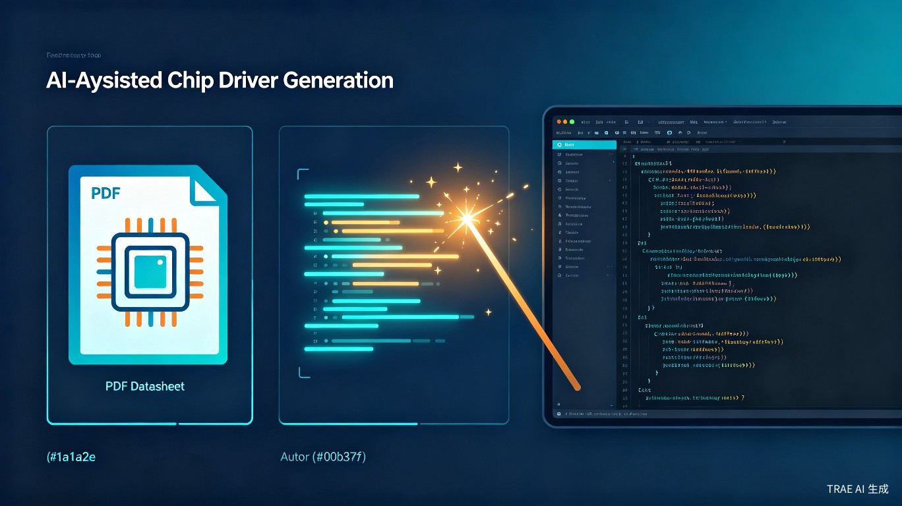

01 创意名称与介绍
ChipForge AI — 芯片驱动自动生成 IDE 插件
想解决什么问题：嵌入式芯片驱动开发中，工程师需要反复阅读数百页的芯片说明书（Datasheet），手动编写大量结构相似、仅参数不同的驱动函数。这一过程耗时长、重复度高、容易出错，严重拖慢了产品开发节奏。
为什么会想到做这个：在开发英飞凌（Infineon）车规级芯片驱动时，我发现阅读说明书、理解寄存器配置、编写初始化函数和功能接口占据了大量时间。许多外设驱动（如 GPIO、UART、SPI、ADC）的代码结构高度相似，区别仅在于寄存器地址、位偏移和参数范围。如果能够提供一段示例代码，让 AI 自动理解说明书中的寄存器定义，生成其余类似功能的驱动函数，将可以大幅缩短驱动开发周期。
大概是什么产品：一个 IDE 插件（支持 VS Code / Eclipse / IAR），工程师在 IDE 中上传芯片说明书 PDF，编写或粘贴一段示例驱动代码，插件自动分析说明书与示例代码的对应关系，一键生成同类型外设的完整驱动函数，并直接插入工程文件。
核心价值主张：用 AI 将"读说明书 → 写重复代码"的 2 周工作量压缩到 2 小时。
02 目标用户及痛点
目标用户
嵌入式硬件工程师、固件开发工程师、芯片原厂 FAE（现场应用工程师）。覆盖汽车电子、工业控制、消费电子、物联网等领域的芯片驱动开发人员。
使用场景
- 已存在部分示例代码（如厂商提供的 SDK 或 Demo），需要基于说明书扩展开发同系列芯片的其他外设驱动
- 新芯片项目启动阶段，需要快速搭建基础驱动框架
- 芯片升级换代时，需要将旧驱动迁移到新芯片，但寄存器定义已变更
当前痛点
阅读耗时
车规级芯片说明书通常 2000-5000 页，找到关键寄存器定义需要数小时
重复劳动
同系列芯片的 GPIO/UART/SPI 驱动结构相似，手动复制粘贴修改参数，额外花费至少一倍时间
容易出错
手动修改寄存器地址和位偏移时极易出错，调试困难且耗时
知识壁垒
新工程师上手新芯片需要较长的学习曲线，降低团队整体效率
03 产品方案
核心工作流
上传说明书
导入芯片 Datasheet PDF，插件自动解析寄存器表、外设描述
提供示例代码
编写或粘贴一段已有驱动函数作为模板
AI 智能匹配
LLM 分析说明书与示例的对应关系，理解代码模式
批量生成驱动
一键生成同类型外设的完整驱动函数，插入工程
技术架构
插件采用 本地 + 云端混合架构：说明书解析和代码生成由云端大语言模型完成（支持私有化部署），IDE 插件负责交互、文件管理和代码插入。支持主流嵌入式开发环境：
VS Code— 通过 LSP（Language Server Protocol）集成Eclipse CDT— 通过插件扩展机制IAR Embedded Workbench— 通过自定义插件接口
核心功能模块
| 功能模块 | 说明 | 优先级 |
|---|---|---|
| 说明书智能解析 | 自动提取寄存器地址、位域定义、默认值、外设配置参数 | P0 |
| 示例代码模式学习 | 分析用户提供的示例代码，提取编码风格、命名规范、注释格式 | P0 |
| 驱动函数批量生成 | 基于说明书 + 示例模式，自动生成同类型外设的完整驱动 | P0 |
| 代码差异对比 | 生成结果与示例代码的 diff 对比，方便工程师审查 | P1 |
| 多芯片系列支持 | 支持同一厂商不同系列芯片的驱动迁移 | P1 |
| 单元测试模板生成 | 自动生成对应驱动函数的测试用例框架 | P2 |
04 价值与意义
对工程师个人的价值
- 提升开发效率：将重复性的驱动编写工作交给 AI，工程师可以聚焦在系统架构和算法优化等高价值工作上
- 降低出错率：AI 生成的代码基于说明书精确解析，减少手动修改寄存器地址时的低级错误
- 加速学习曲线：新手工程师可以通过生成的代码快速理解芯片外设的工作原理和编程模式
对团队和行业的价值
- 减少重复造轮子：团队内积累的驱动开发经验可以通过示例代码模板化，实现知识复用
- 标准化代码风格：AI 生成的代码保持与示例一致的命名规范和注释风格，提升代码可维护性
- 加速芯片选型迭代：驱动开发不再是芯片切换的瓶颈，团队可以更灵活地评估和切换芯片方案
社会意义
在全球芯片供应链多元化的背景下，国内芯片厂商（如兆易创新、极海半导体、芯海科技等）的产品线日益丰富。ChipForge AI 可以帮助工程师更快速地适配国产芯片，降低从国外芯片切换到国产芯片的迁移成本，为国产芯片生态建设贡献力量。
05 实现路径
阶段规划
| 阶段 | 目标 | 关键产出 |
|---|---|---|
| Phase 1（MVP） | 验证核心可行性：说明书解析 + 单外设驱动生成 | VS Code 插件原型，支持 GPIO 驱动自动生成 |
| Phase 2 | 扩展外设类型，支持多芯片系列 | 覆盖 UART/SPI/I2C/ADC/TIMER 等常见外设 |
| Phase 3 | 企业级功能：私有化部署、团队协作 | 支持本地 LLM 部署、代码审查工作流集成 |
技术选型
// 插件框架
VS Code Extension API (TypeScript)
// 说明书解析
PDF 文本提取 → 表格结构识别 → 寄存器定义提取
(基于 LLM 的文档理解)
// 代码生成
云端 LLM API (GPT-4 / Claude / DeepSeek)
或本地部署开源模型 (CodeLlama / Qwen-Coder)
// 代码分析
Tree-sitter (C/C++ 语法解析)
AST 模式匹配 + LLM 语义理解
06 竞品分析
| 对比维度 | ChipForge AI（本方案） | 传统方式 | 通用 AI 编程助手 |
|---|---|---|---|
| 说明书理解 | 深度解析芯片 Datasheet | 人工阅读 | 无专项能力 |
| 代码一致性 | 严格遵循示例代码风格 | 依赖工程师习惯 | 风格不稳定 |
| 寄存器精度 | 基于说明书精确生成 | 人工核对 | 可能编造寄存器地址 |
| 批量生成 | 一键生成多个外设驱动 | 逐个手动编写 | 逐个对话生成 |
| IDE 集成 | 深度集成嵌入式 IDE | 无 | 通用 IDE 插件 |
差异化优势：ChipForge AI 不是又一个通用代码补全工具，而是专门针对"芯片说明书 → 驱动代码"这一垂直场景的深度解决方案。它将说明书解析、代码模式学习和批量生成融为一体，解决的是嵌入式领域独有的痛点。
07 总结
ChipForge AI 面向嵌入式开发中"读说明书、写重复代码"这一真实痛点，通过大语言模型实现从芯片说明书到驱动函数的自动生成。产品形态为 IDE 插件，无缝融入工程师现有工作流，核心价值在于：
- 将 2 周的驱动开发工作压缩到 2 小时
- 消除手动复制粘贴带来的错误风险
- 降低国产芯片适配门槛，助力芯片生态建设
我们相信，AI 不应只服务于互联网和软件行业，更应深入到硬件开发的底层，让每一位嵌入式工程师都能从 AI 中受益。